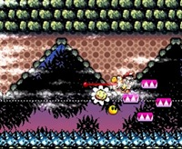

-
Caminar
Se utilizan los botones de flechas.
-
Saltar
Con el botón A puedes saltar y si lo dejas precionado Yoshi se queda
en el aire más tiempo.
-
Sacar la lengua
Con el botón B puedes sacar la lengua y atrapar a villanos y diferentes objetos.

-
Hacer huevos
Ya con un enemigo en la boca de Yoshi, presiona Y y luego la flecha hacia abjo.
-
Disparar huevos
Con la tecla L puedes disparar los huevos que tengas.